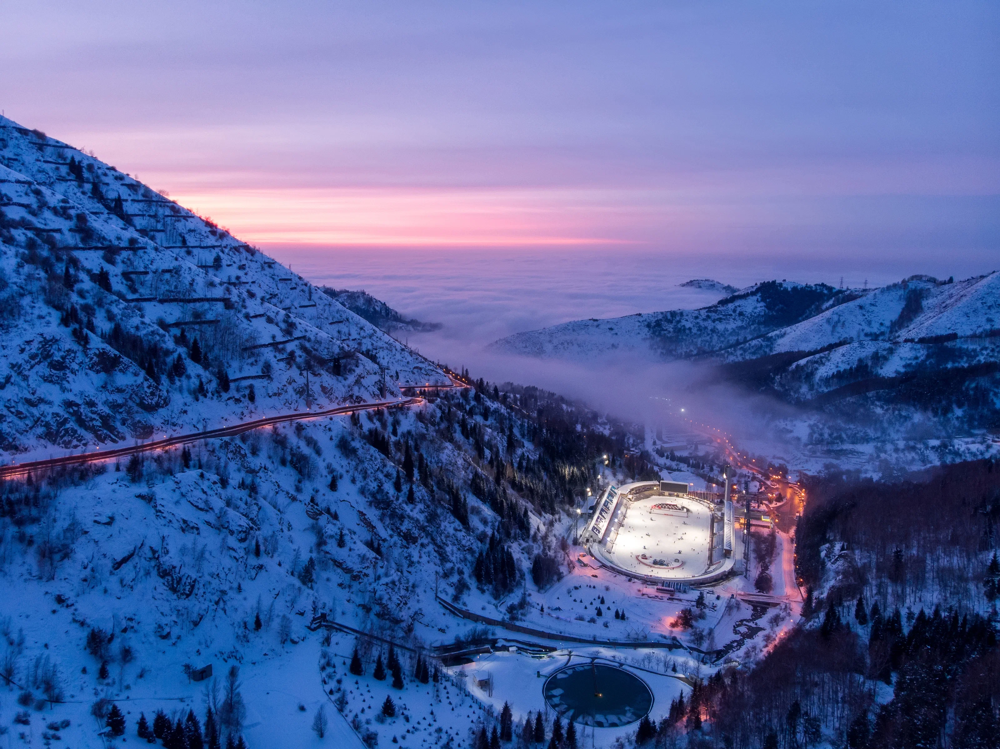
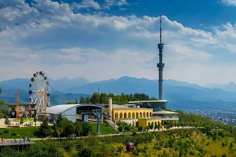

Қала туралы
Алматы — Қазақстанның оңтүстік-шығысында орналасқан ең ірі және ең көрікті қаласы. Тянь-Шань тауларының бауырайында жайғасқан бұл қала өзінің тамаша табиғатымен, заманауи сәулетімен және бай мәдениетімен таң қалдырады.
Қала 1854 жылы Верный бекінісі ретінде негізі қаланып, кейін Алма-Ата деп аталды. Тәуелсіздік алғаннан кейін қала ресми түрде Алматы деп өзгертілді. Бүгінде Алматы елдің қаржылық, мәдени және білім орталығы болып саналады.
Алматы — таулардың аясындағы жасыл желекке оранған, дамыған инфрақұрылымы бар, ірі халықаралық қала. Мұнда мыңдаған студент, кәсіпкер және туристер жыл сайын келіп жатады.

Медеу — дүниежүзіндегі ең биік мұз айдыны
Табиғат және спорт
Медеу — Алматыдан 18 км жерде, теңіз деңгейінен 1691 м биікте орналасқан дүниежүзіндегі ең ірі жасанды мұз айдыны. Мұнда жүздеген әлем рекорды орнатылған, ал конькімен сырғанау мен хоккей ойындары жыл бойы өткізіледі.
Шымбұлақ тау-шаңғы курорты Медеудің жоғарысында орналасып, Алматы туристерінің сүйікті демалыс орнына айналған. Қысқы маусымда шаңғымен сырғанауға, жазда трекингке келушілер саны жыл санап артып келеді.

Көктөбе — Алматының символы
Тарих және мәдениет
Алматының жүрегі — орталық алаңы мен көшелері. Республика алаңы, Панфилов саябағы, Жазушылар одағының ғимараты — бұл орындардың әрқайсысы өз тарихымен, өз оқиғасымен ерекше. Ескі Абай даңғылы мен Арбат көшесі жергілікті тұрғындар мен туристердің сүйікті орындарына айналған.
Алматыда 20-дан астам музей, ондаған театр мен галерея жұмыс істейді. Қазақ мемлекеттік академиялық опера және балет театры, Орталық мемлекеттік музей — мәдениет пен өнердің бесігі.
Көктөбе — теңіз деңгейінен 1100 м биіктікте орналасқан Алматының ең танымал жері. Мұнда фуникулермен немесе жаяу жолмен жетіп, бүкіл қаланың тамаша көрінісін тамашалауға болады.
Ең көрікті орындар
Мәдениет
Алматы туралы толық ақпарат алғыңыз келсе, ресми сайтқа өтіңіз.
Almaty.kz →